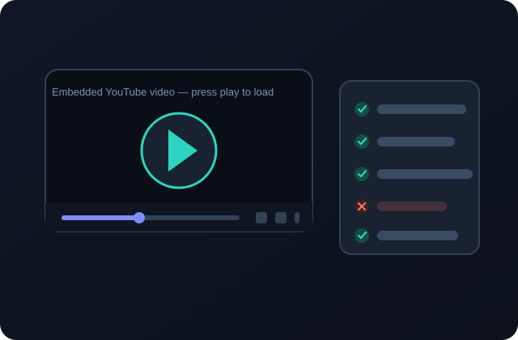

StripChat Tokens Video Guide: Legitimate Methods and Safety Advice
Prefer watching to reading? This is the video companion to the written guide. The short embedded explainer walks through StripChat token claims \u2014 including hack promises and the advertised 50 TK draw \u2014 and explains what to verify before trusting them. Below the player, we summarize the video accurately, list the takeaways, and point you to the deeper written guides.
This page is built around the embedded YouTube video below. It is shown using YouTube’s privacy-enhanced embed mode and does not autoplay; press play only if you want to watch. Underneath the player you will find a factual summary, key takeaways, and answers to common questions.
- The actual claims the video examines, from “hacks” to hourly drawings
- Which details to verify before following an offer shown in a video
- How to keep your account and payment information safe
Embedded third-party YouTube video. It does not autoplay; press play to load it. YouTube’s terms and privacy policy apply once you interact with the player. This site does not own or produce the video.
About this video
The video is an independent explainer hosted on YouTube. This website did not produce, upload, or monetize it on YouTube; it is embedded here under YouTube’s standard embedding functionality, and all rights in the video belong to its publisher.
| Title on YouTube | \u201c🚨 Stripchat Hack 2026\u20132027? Free Token Claims Explained (UPDATED!!)\u201d |
|---|---|
| Publisher (channel) | thenewyorkjets28 on YouTube |
| Upload date | 11 September 2026 |
| Duration | 1 minute 40 seconds |
| Watch directly | Open the video on YouTube |
ℹ Embedded-content notice
The player above is an embedded YouTube video served from YouTube’s privacy-enhanced domain (youtube-nocookie.com). Opening or playing it is governed by YouTube’s terms and privacy policy, and YouTube may set cookies or collect data once you interact with the player. This site does not control that data collection. We have not added autoplay, custom thumbnails, or misleading metadata, and we do not claim search rankings for the video.
Descriptive video summary
The video opens by addressing viewers searching for free StripChat tokens who have encountered promises of unlimited credits, a “working hack,” or a special “mod.” Its first point is that these promises are not evidence: so-called hacks and token generators are not a reliable route to rewards, and some expose viewers to scams, suspicious downloads, or account theft.
It then examines the offer described as 50 free tokens every hour (a promotional drawing). Rather than endorsing it, the video tells viewers to inspect what the offer includes, who qualifies, and what restrictions apply \u2014 for example whether it is still available, whether it applies to the viewer’s account and country, and whether there is a limit or waiting period. It cautions against assuming an hourly reward is available to everyone.
The video names an external website, striptks.live, noting that the site describes itself as covering legal methods rather than hacks or modified apps \u2014 and explicitly frames that as a claim to verify against StripChat’s official information and terms, not a guarantee. The closing advice is security-focused: never give a third-party site your platform password or verification codes, do not install unknown software, and do not pay an unexpected fee to unlock supposedly free tokens.
⚠ Read the claims as claims
The video promotes an external destination. Following our own guidance, treat that mention as marketing: read the destination’s terms, confirm eligibility, and check the offer against your official account. The video’s existence is not proof that any drawing is current, legitimate, or available to you.
The video’s own description on YouTube
“Looking for Stripchat free tokens in 2026—or researching offers for 2027? This video explains what to check before trusting claims of 50 free tokens every hour, Stripchat hacks, mods, or token generators. This video covers information available in 2026. Offers for 2027 have not been verified, and hourly rewards are not guaranteed.”
Quoted from the public YouTube listing for transparency; the video also carries the hashtags #stripchat and #cams. We have not altered its claims.
Key takeaways
- Promises of unlimited or guaranteed tokens \u2014 including “hacks” and “mods” \u2014 should be treated as unverified claims, not opportunities.
- A promotional drawing (such as the 50 TK offer) may exist, but availability, eligibility, terms, and legitimacy must be checked on the destination and against official platform information.
- Rewards are never guaranteed; hourly schedules do not mean every visitor qualifies.
- Third-party sites describing themselves as “legal methods” directories are still third-party claims to verify independently.
- Never disclose passwords or verification codes, install unknown software, or pay an unlock fee.

About chapter timestamps
We have deliberately not published clickable chapter timestamps for this video. Accurate timestamps require either official chapter data supplied by the publisher or a verified transcript with timing; neither is available to us, and inventing timecodes would point readers to the wrong moments. The video runs 1 minute 40 seconds and covers, in order: (1) hack and generator promises, (2) the hourly 50-token drawing claim, (3) the referenced external website and how to treat its claims, (4) eligibility and terms checks, and (5) account-safety advice and closing guidance. Use the progress bar on the official YouTube page if the publisher later adds chapters.
How to use this guide alongside the written pages
At under two minutes, the video can flag what to look for, but verification happens in the detailed guides:
- Establish what is legitimate. Our page on legitimate StripChat token methods explains official promotions, rule-based giveaways, and documented referral programs \u2014 with a verification workflow for any offer.
- Learn the threat mechanics. The token scams and safety guide breaks down fake generators, phishing screens, mod APKs, rogue extensions, and survey traps, including recovery and reporting steps.
- Evaluate the sponsored offer carefully. If you choose to inspect the 50 TK draw destination linked from this site, read the notice below first.
Disclosure-aware CTA: The “Check the 50 TK Draw Offer” button (also pinned to the bottom of every page) opens an independent third-party website with rel="nofollow sponsored noopener noreferrer". It is not an official StripChat page, and this guide does not state that it is safe, verified, or guaranteed. External offers may have separate terms, eligibility requirements, and availability; tokens, prizes, and results are not guaranteed. Review the destination before acting. See the affiliate disclosure.
Frequently asked questions
Who made this video?
The embedded video titled “🚨 Stripchat Hack 2026–2027? Free Token Claims Explained (UPDATED!!)” was uploaded to YouTube by the channel thenewyorkjets28 on 11 September 2026. This website is independent of that channel and of StripChat.
Does this website own the video?
No. The video belongs to its YouTube publisher and is embedded here through YouTube’s standard embedding using the privacy-enhanced youtube-nocookie.com domain. Playing it is subject to YouTube’s terms and privacy policy. If the publisher removes it, the embed will stop working.
Is the offer mentioned in the video legitimate?
It cannot be confirmed from the video alone. The video describes a possible promotional drawing of 50 tokens and points to an external website. Availability, eligibility, terms, and legitimacy must be verified on the destination and against official platform information. This site never describes such offers as guaranteed.
Why are there no clickable timestamps?
Because verified timing data is not available. Rather than fabricate timecodes, the summary lists the topics in the order they appear. The video is only 1 minute 40 seconds long, so it is easy to watch in full or seek manually.
Does the video prove that token hacks exist?
No — its message is the opposite. It explains that hack, mod, and generator promises are unreliable and potentially dangerous, and it directs viewers to verify claims instead of trusting them. Server-side token balances cannot be changed by public generator pages.
Will watching this video or following it get me free tokens?
No outcome is guaranteed, and watching a video cannot credit an account. Tokens can only come through official platform systems or verified promotions with terms you can read. Treat the video as educational, not as a claim path to rewards.
Is the embedded player safe and private?
The embed uses YouTube’s privacy-enhanced mode (youtube-nocookie.com), does not autoplay, and loads only when the page renders; YouTube may still collect data once you press play, under Google’s policies. If you prefer, use the “Open the video on YouTube” link to watch it on YouTube directly.